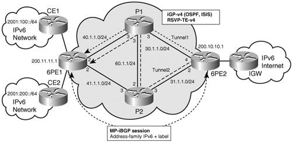

QoS for IPv6 over MPLSMPLS does not define any new QoS architecture. DiffServ architectures as defined in RFC 2474 and RFC 2475 still apply in the MPLS environment. However, MPLS has a number of characteristics and specific mechanisms that enable unique capabilities. For these reasons, RFC 3270 was written to describe MPLS support of DiffServ. This specification allows support of DiffServ for both IPv4 and IPv6 traffic transported over an MPLS network. Using DiffServ in an MPLS environment for IPv6 traffic is not different regardless of whether the LSP is set up using IPv4 protocols (this is the case for 6PE and for 6VPE) or set up using IPv6 protocols. In fact, there are no interactions at all between MPLS DiffServ, which deals with the MPLS shim layer, and the LSP setup mechanisms itself; this enables DiffServ to be used indistinctly on traffic using label paths set up by LDP IPv4, LDP IPv6, RSVP, or even manually set up. MPLS-TE offers the means to set up paths with explicitly reserved bandwidth across an MPLS core. The RSVP signaling used by MPLS-TE can be IPv4 or IPv6. At the time of this writing, IPv6 RSVP is not yet supported on Cisco routers. However, because 6PE and 6VPE use IPv4-signaled LSP, they benefit seamlessly from IPv4 MPLS-TE setup mechanisms, including IPv4 RSVP. However, the mechanisms to achieve tunnel selection for certain IPv6 traffic may be IPv6 specific. This is the case, for instance, when the operational choice is to have tunnels dedicated on a pernetwork layer basis. Those mechanisms are detailed in the RSVP-TE section. The next sections cover DiffServ and MPLS-TE in the 6PE/6VPE context and provide configuration examples for both. Using DiffServ in a 6PE or 6VPE EnvironmentMPLS DiffServ can extend the IP DiffServ mechanisms to allow service providers to deliver QoS-based service without interfering with the customer's traffic marking. In the MPLS network, QoS information is carried in the MPLS shim header as described in RFC 3270 and shown in the Table 5-3. Table 5-3. MPLS Shim HeaderThe MPLS header is 4 bytes, out of which 3 bits are used for DiffServ and referred to as the Exp field. These bits help define the QoS treatment (PHB) that a node should give to a packet. You can think of this as a sort of hierarchical PHB, where the Exp field is used for QoS treatment inside the MPLS core, and at the egress boundary, whereas DSCP is used outside the core, and at the ingress boundary. Using DiffServ on the MPLS ingress boundary for differentiating IPv6 traffic is almost exactly the same as using it outside an MPLS environment. Packets need to be classified, which may take place prior to reaching the MPLS edge router or at the MPLS edge router itself. In both cases, the MPLS Exp field must be filled, either by simply copying it from the DSCP field or by applying any sort of classification rule. Because the Exp field is only 3 bits (compared to 6 bits for DSCP), you can just copy the class-selector bits into the Exp field, or decide to "map" the DSCP into the Exp field based on a predefined scheme. The former is the default behavior and good enough in environments where the CEs are managed by the service provider or simply trusted to deliver DSCP classes directly valid in the core network. The latter is used when the CE is untrusted and can also provide some flexibility to distinguish core classes based on dropping precedence. However, it requires additional packet classification and conditioning at the PE (6PE or 6VPE). This is sometimes referred to as the pipe model. In some cases, the Exp bits can even be used exclusively to encode the dropping precedence. Note Note that 3 bits allow up to 8 classes in the core, which so far has been plentiful in known core QoS deployments. Configuration ExampleThe following example shows how you can implement DiffServ in a 6PE or 6VPE network. Let's assume that the CE is unmanaged and does not always set the proper values for the DSCP field. Therefore, the SP wants to classify and mark explicitly the MPLS Exp field for traffic coming from this CE. The first step is to classify incoming traffic from the CE. This is done using the following ALCs that identify the following:
Example 5-6 shows the configuration of the ACLs identifying these three traffic types. Example 5-6. Access Lists Identifying Three Traffic Types
On the 6PE, the following four access classes are defined:
The Internet class uses the default class, which is always present on Cisco routers. The traffic for classes 1 to 3 is classified based on the DSCP values and access lists above, using the class maps shown in Example 5-7. Example 5-7. Configuration of the Four Access Classes Defined for the 6PE QoS Example
In the MPLS core network, another four classes (could be fewer) are defined, and specific Exp fields are associated to each:
Note that the MPLS core classes apply to both IPv4 and IPv6 traffic, and in most cases preexist to the enabling of 6PE or 6VPE. A policy map is configured referring the set of classes defined on the access, and setting the Exp field in labels imposed at the 6PE/6VPE as shown in Example 5-8. Example 5-8. Policy Identifying the Exp Bits to be Assigned to Tagged IPv6 Packets Belonging to the Four Access QoS Classes
The policy map is then applied inbound to the 6PE interface facing the CE: interface Serial0/0
ip address 50.1.1.2 255.255.255.0
service-policy input CE1
ipv6 address 2001:10::72B/64Core policies are also defined on the 6PE router, consistent with the ones on each P-router in the core, as shown in Example 5-9. Example 5-9. Configuration of the Four Core Classes and the Corresponding Policies Defined for the 6PE QoS Example
The policy is applied outbound on the core-facing interface, as shown in Example 5-10. Example 5-10. Applying QoS Policies on the Core-Facing Interface of the 6PE Router
At the egress 6PE or 6VPE, the DSCP field can be overwritten based on specific policies, including the value of the Exp field, or simply left to the value they had at the ingress PE, before entering the MPLS network. Note that in the preceding example, the PE is explicitly setting the Exp field. In fact, in most cases, the SP will just carry the DSCP field, with the advantage that no classification needs to take place at the PE. So the ingress input policies and corresponding policy map (CE1) are not necessary. Using RSVP-TE in a 6PE or 6VPE EnvironmentIP routing protocols are not good at optimizing network utilization and performance. Although they can recover from network failures, they typically select the shortest path to a destination, ignoring other paths. Amazingly, loop-avoidance mechanisms rely significantly on the assumption that all nodes within a routing area have a consistent view of the topology, hence will be using the same path to the destination. Shortest-path routing often leads to unbalanced traffic distribution across the network, creating congestion hot spots in some areas, while some links are underutilized. One well-known issue related to the topic is the so-called fish problem, named after the shape of the typical topology that illustrates it. In Figure 5-4, traffic flowing from 6PE2 to 6PE1 and beyond will tend to use only one path (for instance, via P1). Figure 5-4. Using RSVP-TE with 6PELoad balancing may sometimes help improve the traffic distribution, but is certainly not the panacea, particularly when unequal cost paths are available. In the most common case, label binding is based on routing information, and MPLS performs destination-based forwarding. However, by enabling source-routing-like mechanisms via the label switch path (LSP), MPLS offers good opportunities to resolve the issue of bandwidth optimization. When more flexible (or rather more controlled) forwarding policies are required, RSVP-TE provides alternative for label binding, other than exclusively based on routing information. With RSVP-TE, you can define forwarding policies at a granularity of a flow or group of flows. This technology is referred to as MPLS traffic engineering. One or many tunnels are set up between edge routers (PEs) or between core routers (Ps), explicitly or automatically, based on available and required bandwidth. The traffic between tunnels' endpoints can then select a particular tunnel based on a variety of criteria. Those criteria encompass different strategies:
One common MPLS-based approach for traffic engineering is the overlay model. Service providers build a virtual network that includes a full mesh of logically connected PEs. These logical connections can be MPLS explicit routes enforced via bandwidth reservation. The MPLS LSPs explicitly set up using RSVP-TE can be used to replace the LSP routes provided by the combination of an interior gateway protocol (IGP) and LDP to enable more efficient resource utilization. Both Chapter 3, "Delivering IPv6 Unicast Services" and Chapter 7, "VPN IPv6 Architecture and Services," review in detail the way IPv6 traffic can use IPv4-signaled LSPs. A direct consequence is that whichever mechanism is available at the IPv4 LSP level can be beneficial to 6PE and 6VPE. As far as MPLS-TE is concerned, RSVP-TE can be used in the IPv4-based MPLS core to optimize the bandwidth and for fast-reroute purposes. The tunnels are set up exactly as they would be for providing the service to IPv4 traffic. In fact, it is recommended that the tunnels be set up for both IPv4 and IPv6 at the same time because the criteria to select these tunnels have less to do with the network layer than with applications, type of traffic, or specific customer. There are (at least) two methods for selecting the RSVP-TE tunnels for IPv6 (6PE or 6VPE) traffic:
Examples of each are provided in the next sections. Using Multiple BGP Next HopsThe egress 6PE can explicitly set up the next hop announced in BGP updates, based, for instance, on prefixes being advertised. The following configuration provides an example of this technique. A route map is defined that sets different next hops for different match criteria as shown in Example 5-11. Example 5-11. Route Maps and Corresponding Access Lists Identifying the TE Tunnel-Selection Criteria
The route map is applied on prefixes announced by the 6PE, as shown in Example 5-12. Example 5-12. Applying the Route-Maps Defined in Example 5-11 to the Prefixes Advertised by the 6PE Router
At the ingress PE, two RSVP-TE tunnels are set up, as shown in Example 5-13. Example 5-13. Two TE Tunnels Configured on the PE Router
In this example, the tunnel paths are explicitly configured as shown in Example 5-14. Example 5-14. Explicit Configuration of the Tunnel Paths
And static routes are configured to select the tunnel based on the next hop received from the egress PE (PE1): ip route 200.8.8.1 255.255.255.255 Tunnel1 ip route 200.9.9.1 255.255.255.255 Tunnel2 At the ingress PE2, you can display the detailed LSP used by the forwarding plane (CEF) for destination 2001:100::/64 and 2001:200::/64. The output of the show ipv6 cef command provides the following information: Example 5-15. IPv6 CEF Information for Prefix 2001:100::/64
Note that the two paths are distinct from the start, one via interface Ethernet0/0 and the other via interface Ethernet2/0. COS-Based TE Tunnel Selection (CBTS)The idea of CBTS is to allow different parallel tunnels between the same head end and the same tail end to each carry a different subset of the class of service (CoS). At ingress PE, the CBTS configuration involves the following:
At the ingress PE, one tunnel is then selected over the other based on the Exp field value found in the topmost label of each packet. As previously discussed, packets arriving unlabeled (IPv6 packets) at ingress 6PE can be classified and marked with a particular Exp value while the label stack is being imposed, so that CBTS at the same node can then use this value to further select the tunnel matching the corresponding code points. In the following example, tunnels (tunnel1 and tunnel2) are configured the same way as in Example 5-13, and again, CEF has parallel paths to get to a particular destination prefix, via tunnel1 or tunnel2. But in CBTS case, each tunnel gets the additional command highlighted in Example 5-16. Example 5-16. Tunnel Configuration Example in the CBTS Scenario
Then, as in the DiffServ example, traffic is classified and the Exp field is set, so that some of this traffic is put into tunnel1 and some into tunnel2 (see Example 5-17). Example 5-17. Configuration of Policies Setting the Exp Bits Used for Tunnel Selection in the CBTS Scenario
In this example, classification (class map for class tunnel1 and tunnel2) is not shown, but would be similar to the examples detailed in DiffServ sections. The CE1 policy is applied inbound on the CE-facing interface. Note At the time of this writing, CBTS, when used in conjunction with 6PE or 6VPE, is not yet available on Cisco routers. The feature will become available in the near future. |